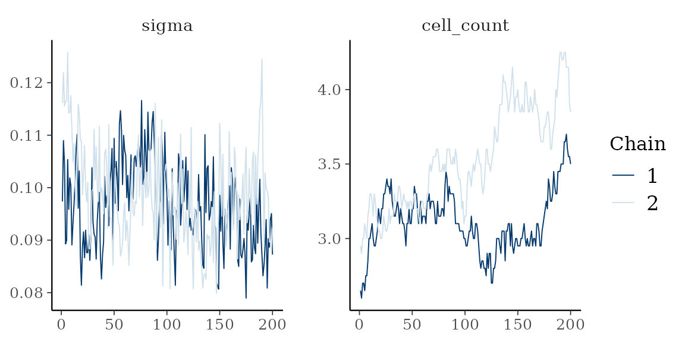

Every package this article uses sits in Suggests, so
each chunk is skipped where one of posterior, loo, bayesplot or
tidybayes is absent. A rendering with no output below is that, not a
failure.
A fit carries its draws, so the established Bayesian tooling takes one without adaptation. Nothing here is a method of this package beyond the generics it registers.
library(thiessen)
library(posterior)
#> This is posterior version 1.7.0
#>
#> Attaching package: 'posterior'
#> The following objects are masked from 'package:stats':
#>
#> mad, sd, var
#> The following objects are masked from 'package:base':
#>
#> %in%, match
set.seed(1)
n <- 120
x <- cbind(runif(n), runif(n))
y <- 2 * (x[, 1] - 0.5)^2 + 0.5 * x[, 2] + rnorm(n, sd = 0.1)
control <- thiessen_control(
tessellations = 20,
general_params = general_params(burn_in = 100, draws = 200)
)
fit <- thiessen(x, y, control, chains = 2, seed = 1)
#> Warning in thiessen(x, y, control, chains = 2, seed = 1): The chains may not
#> have converged: largest R-hat 1.318 (threshold 1.01), smallest effective sample
#> size 5 (threshold 400). Run more draws or more chains.The short schedule here never meets the convergence thresholds, so the fit warns. That is the warning working, not a problem with the code below.
The draws
as_draws_df() and as_draws_array() return
the draws in posterior’s own formats, chains kept separate.
draws <- as_draws_df(fit)
c(draws = ndraws(draws), chains = nchains(draws))
#> draws chains
#> 400 2
dim(as_draws_array(fit))
#> [1] 200 2 123The variables are the mean function at each training row,
mu[i], the noise scale sigma, and two
structural counts: cell_count, the cells across the
ensemble, and dimension_count, the covariates in use.
grep("^mu\\[", variables(draws), invert = TRUE, value = TRUE)
#> [1] "sigma" "cell_count" "dimension_count"summarise_draws() gives the usual table, R-hat and both
effective sample sizes included.
summarise_draws(subset_draws(draws, variable = c("sigma", "cell_count")))
#> # A tibble: 2 × 10
#> variable mean median sd mad q5 q95 rhat ess_bulk ess_tail
#> <chr> <dbl> <dbl> <dbl> <dbl> <dbl> <dbl> <dbl> <dbl> <dbl>
#> 1 sigma 0.0976 0.0968 0.00863 0.00915 0.0850 0.112 1.08 23.5 45.4
#> 2 cell_count 3.32 3.25 0.350 0.297 2.85 4 1.63 3.41 22.1Three predictive quantities
The three are distinct and easy to confuse.
-
posterior_epred()is the mean function, one row per draw: E[y | x] without observation noise. -
posterior_predict()adds the noise, so it draws replicate observations. Under the probit family it returns labels. -
predictive_interval()summarisesposterior_predict()into central intervals, one row per observation.
dim(posterior_epred(fit, x))
#> [1] 400 120
dim(posterior_predict(fit, x))
#> [1] 400 120
head(predictive_interval(fit, newdata = x, prob = 0.9), 3)
#> 5% 95%
#> [1,] 0.3546766 0.7293318
#> [2,] 0.1186428 0.4806989
#> [3,] 0.1004832 0.4639015predict() reaches the same quantities through one
argument, and predict(type = "draws") is
posterior_epred().
Trace plots
bayesplot takes the draws object as it stands.
bayesplot::mcmc_trace(as_draws_array(fit), pars = c("sigma", "cell_count"))
thiessen_diagnostics() returns the same content as a
per-draw data frame for a plot of your own. It is not for printing: a
bare print() dumps every draw.
Cross-validation with loo
log_lik() returns the pointwise log-likelihood, draws by
observations, which is what loo::loo() expects.
log_likelihood <- log_lik(fit)
dim(log_likelihood)
#> [1] 400 120
estimate <- loo::loo(log_likelihood)
#> Warning: Some Pareto k diagnostic values are too high. See help('pareto-k-diagnostic') for details.
estimate$estimates
#> Estimate SE
#> elpd_loo 92.25679 6.964020
#> p_loo 29.66265 3.260829
#> looic -184.51359 13.928040Read the Pareto k diagnostic before the estimate. The importance sampling behind PSIS-LOO fails for an observation whose k exceeds 0.7, and a short schedule on a small data set produces several:
k <- estimate$diagnostics$pareto_k
c(observations = length(k), unreliable = sum(k > 0.7))
#> observations unreliable
#> 120 6Where that count is more than a handful, the estimate is not trustworthy and the answer is more draws, not a different estimator.
tidybayes
tidy_draws() works on the fit directly, and
spread_draws() on the frame it returns.
tidy <- tidybayes::tidy_draws(fit)
dim(tidy)
#> [1] 400 126
head(tidybayes::spread_draws(tidy, sigma), 3)
#> # A tibble: 3 × 4
#> .chain .iteration .draw sigma
#> <int> <int> <int> <dbl>
#> 1 1 1 1 0.0974
#> 2 1 2 2 0.109
#> 3 1 3 3 0.105References
Vehtari, A., Gelman, A. and Gabry, J. (2017). Practical Bayesian model evaluation using leave-one-out cross-validation and WAIC. Statistics and Computing 27(5), 1413-1432. doi:10.1007/s11222-016-9696-1
Vehtari, A., Gelman, A., Simpson, D., Carpenter, B. and Buerkner, P.-C. (2021). Rank-normalization, folding, and localization: an improved R-hat for assessing convergence of MCMC. Bayesian Analysis 16(2), 667-718. doi:10.1214/20-BA1221